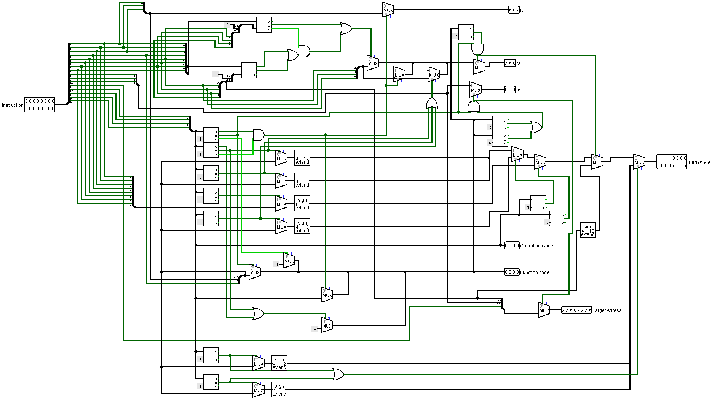
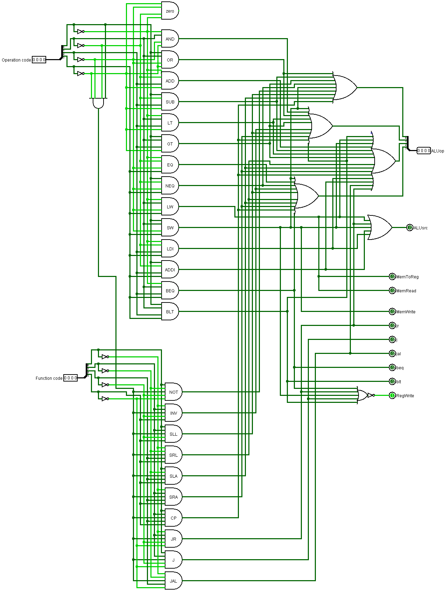
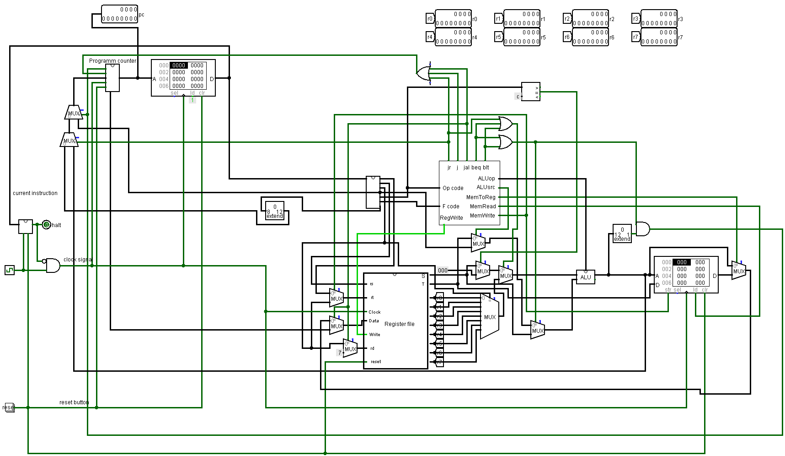

Titel: Full Datapath
Dit verslag werd opgesteld door: Lorek Jeremi
De oplossing bestaat uit de volgende bestanden (geef alle bestanden op):
Voor dit project moesten de branch en jump instructies nog toegevoegd worden aan het Simple Datapath (vorig project). Ik ben hieraan begonnen door eerst de decoder aan te passen.
Aan de decoder moest er een nieuwe output toegevoegd worden, namelijk Target Adress. Ook moesten er een aantal aanpassingen gemaakt worden aan de stappen tot de outputs. Aangezien er enkele nieuwe operaties bij gekomen zijn, heb ik net zoals in het vorige project, een soort van if-statements gemaakt door middel van comparators en multiplexers. Zo heb ik ervoor kunnen zorgen dat elke output de juiste waarde geeft.

Deze foto toont de decoder van het project. De Target Adress is de nieuwe output die toegevoegd moest worden. De andere outputs zijn hetzelfde als in het vorige project.
Aan de controller moesten er ook nieuwe outputs gegeven worden. Ik heb eerst de nieuwe branch en jump operaties toegevoegd als een AND-gate zoals de andere operaties. Vervolgens heb ik, voor elke van de jump en branch operaties, een nieuwe output toegevoegd. Deze nieuwe outputs zijn letterlijk de naam van de operatie. (beq, blt, j, jal, jr). Daarna heb ik ook nog de juiste ALU-code gegeven bij de nieuwe operaties en ten slotte heb ik er ook nog voor gezorgd dat er een correct werkende RegWrite is.

Deze foto toont de controller van het project. De nieuwe outputs zijn de outputs die beginnen met een 'j' of een 'b'. De andere outputs zijn hetzelfde als in het vorige project.
Aan de program counter is er ook nog een kleine aanpassing gebeurt. Aangezien er in de description van de nieuw toegevoegde instructies, meerdere keren PC + 1 staat, heb ik een extra output toegevoegd aan het circuit van de program counter. Deze nieuwe output heeft de waarde van PC + 1 die het dan makkelijker maakt om de nieuwe operaties te implementeren.

Deze foto toont de program counter van het project. De nieuwe output is diegene die op de foto op waarde 1 staat. De andere output is hetzelfde als die van het vorige project.
Na al deze 'kleine' veranderingen in de andere circuits, kon ik de nieuwe instructies implementeren in het volledige datapad. Door de nieuwe instructies, zijn de Branch Absolute en Branch Relative nu niet meer een constante nul, maar heb ik deze aangepast door de nieuwe outputs van de controller. De jr,j en jal output van de controller zorgen ervoor dat de branch absolute aan of uit staat. De beq en blt, samen met de uitkomst van de ALU, zorgen ervoor dat de branch relative aan of uit staat. De nieuwe outputs van de controller zijn ook verbonden met verschillende multiplexers, om ervoor te zorgen dat de juiste waarden worden doorgegeven bij inputs van de ALU, inputs van het register of de input van de program counter.

Deze foto toont het volledige datapad van het project. Dit is het uitgewerkte geheel dat de operaties uitwerkt.